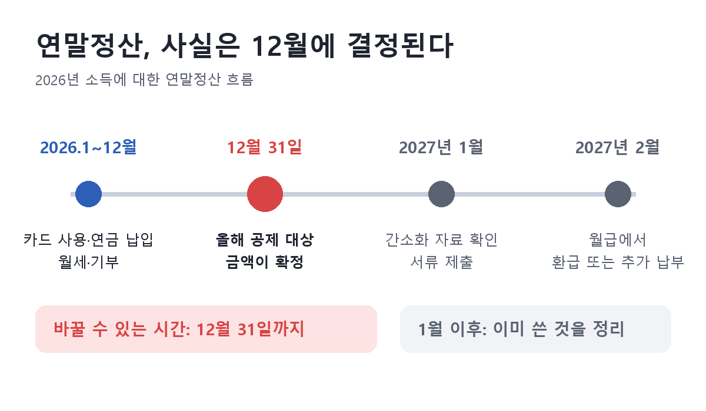
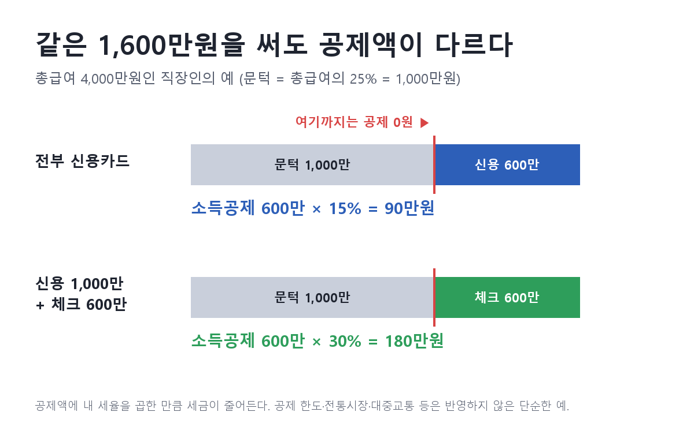
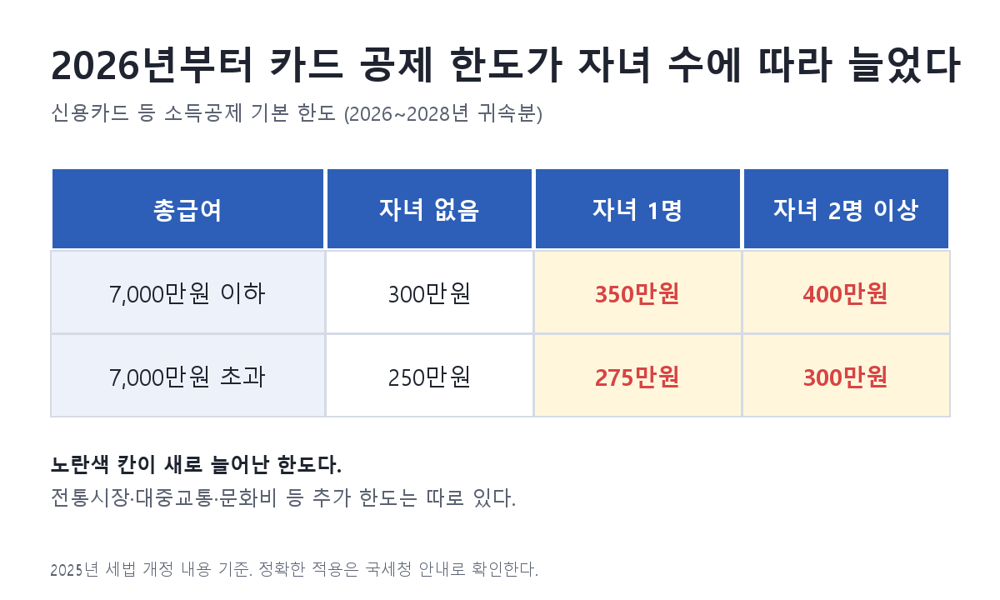
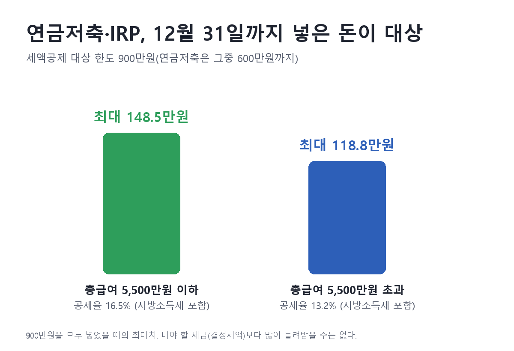
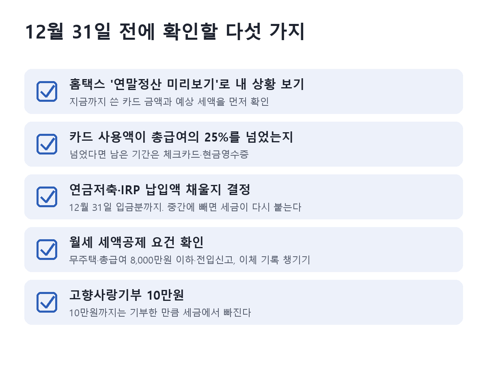

작성일 2026.11.15 · 2026년 소득(2027년 1~2월 연말정산) 기준
연말정산이라고 하면 보통 1월을 떠올립니다. 회사에서 공제 서류를 내라는 안내가 오고, 홈택스에서 간소화 자료를 내려받는 시기입니다. 그런데 그때 할 수 있는 일은 생각보다 많지 않습니다. 1월에는 이미 지난해에 쓴 돈과 넣은 돈을 정리해서 제출할 뿐이기 때문입니다.
환급액을 바꿀 수 있는 시간은 12월 31일까지입니다. 이번 글에서는 왜 그런지, 그리고 올해가 가기 전에 무엇을 확인하면 좋은지 정리해 보겠습니다. 이전 글 「소득공제 vs 세액공제」에서 다룬 두 공제의 차이를 알고 보면 더 쉽게 읽힙니다.
연말정산은 1년 동안 월급에서 미리 뗀 세금과, 실제로 내야 할 세금을 비교해서 차액을 돌려주거나 더 걷는 절차입니다. 이때 공제 대상이 되는 금액은 1월 1일부터 12월 31일까지 사용하거나 납입한 금액입니다.
그래서 1월에 서류를 아무리 꼼꼼히 챙겨도, 이미 정해진 금액을 빠짐없이 제출하는 것 이상은 하기 어렵습니다. 반대로 12월에는 남은 한 달 동안 어떤 카드를 쓸지, 연금계좌에 돈을 더 넣을지 정할 수 있습니다.

무엇을 할지 정하기 전에 지금 상태부터 보는 것이 순서입니다. 국세청 홈택스에는 매년 가을에 연말정산 미리보기 서비스가 열립니다. 그해 1~9월 카드 사용액이 미리 들어가 있고, 남은 기간의 사용액을 넣어 보면 예상 세액을 계산해 줍니다.
여기서 확인할 것은 두 가지입니다.
메뉴 이름과 위치는 홈택스 화면 개편에 따라 바뀔 수 있으니, 홈택스 첫 화면에서 '연말정산 미리보기'로 검색하면 찾기 쉽습니다.
신용카드 등 소득공제는 쓴 돈 전체가 아니라 총급여의 25%를 넘게 쓴 부분에만 적용됩니다. 총급여가 4,000만원이면 1,000만원까지는 아무리 써도 공제가 0원이고, 그 위로 쓴 금액부터 공제가 시작됩니다.
문턱을 넘은 뒤에는 결제 수단에 따라 공제율이 다릅니다.
| 결제 수단 | 공제율 |
|---|---|
| 신용카드 | 15% |
| 체크카드·현금영수증 | 30% |
| 전통시장·대중교통 | 40% |
문턱 아래 금액은 공제율이 낮은 신용카드 사용액부터 채운 것으로 계산합니다. 그래서 흔히 "25%까지는 혜택이 많은 신용카드, 넘은 뒤에는 체크카드"라고 합니다. 같은 금액을 써도 공제액이 두 배까지 차이 날 수 있습니다.

위 예에서 공제액 차이는 90만원입니다. 소득공제는 세금이 아니라 세금을 매기는 소득을 줄이는 것이므로, 실제로 줄어드는 세금은 여기에 내 세율을 곱한 만큼입니다. 세율 15% 구간이라면 지방소득세를 포함해 약 15만원 정도가 됩니다.
다만 카드를 일부러 더 쓰는 것은 의미가 없습니다. 공제받는 세금보다 쓰는 돈이 훨씬 크기 때문입니다. 어차피 쓸 돈을 어떤 수단으로 결제할지만 정하면 됩니다.
올해(2026년 소득)부터 바뀐 점도 있습니다. 카드 소득공제에는 한도가 있는데, 자녀 수에 따라 이 한도가 늘어났습니다. 이 기준은 2028년 소득분까지 적용됩니다.

예전 한도를 이미 채울 만큼 카드를 쓰던 자녀 가구라면, 올해는 공제를 더 받을 수 있습니다. 한도를 채우지 못하는 사람에게는 달라지는 것이 없습니다. 한도가 늘었다고 문턱(25%)이 낮아진 것은 아니기 때문입니다.
연금저축과 IRP(개인형 퇴직연금)에 넣은 돈은 세액공제 대상입니다. 세금 자체에서 빼 주기 때문에 효과가 직접적입니다.

연말에 한꺼번에 넣어도 공제받는 금액은 같습니다. 그래서 12월에 남은 여유 자금을 보고 납입액을 정하는 사람이 많습니다. 다만 마지막 날에는 이체 한도나 금융사 점검 때문에 입금이 늦어질 수 있으니 며칠 여유를 두는 편이 안전합니다.
넣기 전에 생각할 점도 있습니다.
무주택 세대의 세대주(요건을 갖추면 세대원도)이고 총급여가 8,000만원 이하라면 월세의 일부를 세액공제받을 수 있습니다. 연 1,000만원 한도에서 총급여 5,500만원 이하는 17%, 초과는 15%입니다.
12월에 확인할 것은 서류입니다.
월세는 간소화 자료에 자동으로 잡히지 않는 경우가 많아, 1월에 직접 챙겨야 하는 항목이기도 합니다.
고향사랑기부제는 주소지가 아닌 지방자치단체에 기부하는 제도입니다. 10만원까지는 기부한 금액만큼 세액공제되고, 기부액에 따라 지역 답례품도 받을 수 있습니다. 세금을 낼 것이 있는 직장인이라면 연말에 많이 챙기는 항목입니다. 10만원을 넘는 금액은 공제율이 낮아지므로, 그 이상은 기부 자체에 뜻이 있을 때 하는 것이 좋습니다.
자녀가 있다면 교육비 공제도 확인해 볼 만합니다. 올해부터 초등학교 저학년 자녀의 예체능 학원비도 교육비 세액공제 대상에 들어갔습니다. 학년이나 한도 같은 세부 기준은 국세청 연말정산 안내가 나오면 확인하는 것이 정확합니다.
1월에 후회하지 않으려면 12월에 한 번 확인해 두는 것이 좋습니다
연말정산은 '1월에 서류를 내는 일'이 아니라 '1년 동안 쓴 돈의 결과를 정리하는 일'입니다. 결과를 바꿀 수 있는 시간은 12월 31일까지이고, 확인할 것은 많지 않습니다.

세금 제도는 해마다 조금씩 바뀝니다. 이 글은 2026년 11월 15일 기준으로 정리했으며, 실제 공제 금액은 개인의 소득과 상황에 따라 다릅니다. 최종 내용은 국세청 홈택스 안내로 확인하시기 바랍니다. 또한 연금 상품 가입을 권하는 글이 아니므로, 납입 여부는 각자의 자금 계획에 맞춰 정하시기 바랍니다.